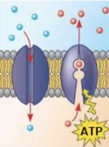
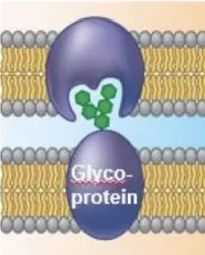
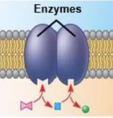
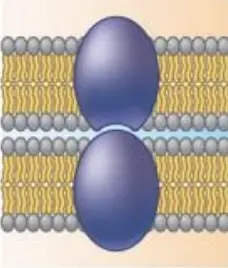
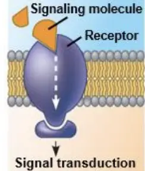
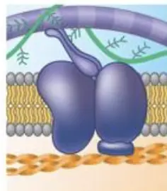

Concept 1: Cellular membranes are fluid mosaics of lipids and proteins
Plasma membrane (세포막) (=cell membrane)
- ⇒ selective permeability(선택적 투과성)
- 1. phosholipid bilayer(인지질 이중층)
- Phospholipids (인지질 ): Hydrophilic head + Hydrophobic tail
- ⇒ amphipathic(양쪽성) molecules
- 2. Fluid mosaics (유동 모자이크)
- 1. 유동적인 액체 같은 성질을 가짐 - fluid
- 2. 단백질 등 성분이 군데군데 섞여있는 모자이크 같이 보임 - mosaics
- 3. move
- phospholipids ⇒ 작아서 빠르게 움직임
- proteins ⇒ 크고 무거워 막 속에서 천천히 이동함.
Membrane proteins and their functions

- 1. Transport - selective permeability
- ATP를 이용하여 선택적 투과

- 1. cell-cell recognition
- 당단백질(glycoprotein)에 붙은 탄수화물 태그로 세포끼리 인식

- 1. enzymatic activity

- 1. intercellular joining
- 세포와 세포 사이를 join
- ex) 표피층

- 1. signal transduction
- 신호 분자 + Receptor
- → 세포 내의 변화 야기(cell signaling)

- 1. attachment to the cytoskeleton & extracellular matrix (ECM)
- 골격 구조 or 세포 밖 구조에 결합
Concept 2: Membrane structure results in selective permeability
Membrane transport
- 소수성 (비극성, Hydrophobic, Nonpolar) ⇒ 인지질 꼬리 부분과 성질이 비슷하여 막을 쉽게 투과.
- 극성 (polar) ⇒ 친수성이라 인지질 꼬리 부분을 잘 지나가지 못함.
- 물(H₂O) → 작은 분자이지만 극성이 있어서, 그냥은 잘 통과하지 못함 → 특별한 단백질 통로가 필요.
Concept 3: Passive transport is diffusion of a substance across a membrane with no energy investment
- 1. Diffusion(확산): passive transport (O2, CO2)
- 농도 기울기를 따라, 에너지 사용 없이 물질이 퍼져 나감.
- 2. Facilitated diffusion (촉진 확산)
- → 수송 단백질(transport proteins)이 도와줌 ← 에너지 소모는 없음(여전히 확산)
- (1) Aquaprorin : 물을 위한 통로 단백질
- (2) stimulus-gated ion channel : 전기적 신호나 화학 신호가 오면 열렸다 닫힘.
- 1. Transport proteins
- (1) Channel protein → 터널처럼 열려 있어 분자가 지나감
- (2) Carrier protien → 분자를 잡았다가 모양을 바꿔 반대편으로 내보냄
Osmosis (삼투)
- 물이 selectively permeable membrane을 통해 농도가 낮은 쪽 → 농도가 높은 쪽으로 이동
- ### Osmoregulation (삼투조절)
- 생물이 세포 속 물과 용질의 농도 균형을 유지하는 과정
- 적혈구(RBC) → 세포벽이 없기 때문에 농도 차이에 매우 민감.
- 짚신벌레(Paramecium) → 항상 저농도 수중환경(hypotonic pond)에 살기 때문에, 수축포(contractile vacuole)로 물을 계속 내보냄
Concept 4: Active transport uses energy to move solutes against their gradients
Active transport (능동 수송)
- 1. 농도 기울기의 반대 방향으로 (농도가 낮은 쪽 → 높은 쪽으로) 물질을 이동시킴
- 2. 에너지가 필요
- 보통 ATP를 이용하여 단백질 펌프를 작동시킴 (소듐 이온을 옮기며 이용)
- sodium-potassium pump (Na+/K+ 펌프)
- 한 주기로 Na⁺ 3개를 밖으로 내보내고, K⁺ 2개를 안으로 들여보냄.
- 이 과정에서 ATP 1분자가 사용됨.
- (proton = H+)
- ⇒ 위치 에너지로 변환시켜 에너지원이 됨.
Concept 5: Bulk transport across the plasma membrane occurs by exocytosis and endocytosis
Exocytosis & endocytosis (bulk transport : 대량 수송)
- 1. Exocytosis (세포 밖으로 내보냄)
- 2. Endocytosis (세포 안으로 들여옴)
- Phagocytosis (“cellular eating”, 식세포작용)
- 세균, 음식입자 등 세포가 집어삼킴 → 리소좀에 결합시켜 분해
- Pinocytosis (“cellular drinking”, 음세포작용)
- Receptor-mediated endocytosis (수용체 매개 엔도사이토시스)
- 세포막 특정 수용체가 인식한 물질만 선택적으로 들여옴
- e.g.) cholesterol uptake. 콜레스테롤이 LDL(저밀도 지질단백질) 형태로 운반되어 들어옴
- LDL + LDL receptor → 콜레스테롤 운반
- → 세포막의 유동성 조절, 다른 물질을 합성하는 기본 물질(ex 성호르몬 등)
- familial Hypercholesterolemia
- 콜레스테롤 스용체가 없어서 콜레스테롤을 저장하지 않아 콜레스테롤이 과해지며 생기는 질병
Concept 6: The plasma membrane plays a key role in most cell signaling
cell signaling : cell-to-cell communication
- 1. 직접 접촉을 통한 통신 (direct contact)
- 동물세포 : gap junction → 단백질 통로가 세포막 사이를 이어줌
- 식물 세포 : plasmodesmata → 세포벽을 뚫고 있는 가느다란 통로
- 2. secretion(분비) of local regulators(조절자)
- (1) growth factors(성장인자) (2) neurotransmitters(신경전달물질)
- 1. long-distance signal : hormones (endocrine signaling)
three stages of cell signaling
- 수용(Reception0 ⇒ 전달(Transduction) ⇒ 반응(Response)
- Ion channel : 신호 물질을 받으면 → 이온 통로 역할을 시작함.